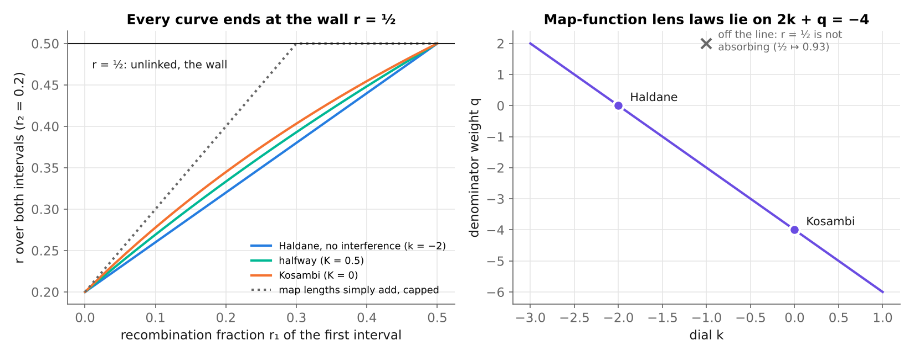
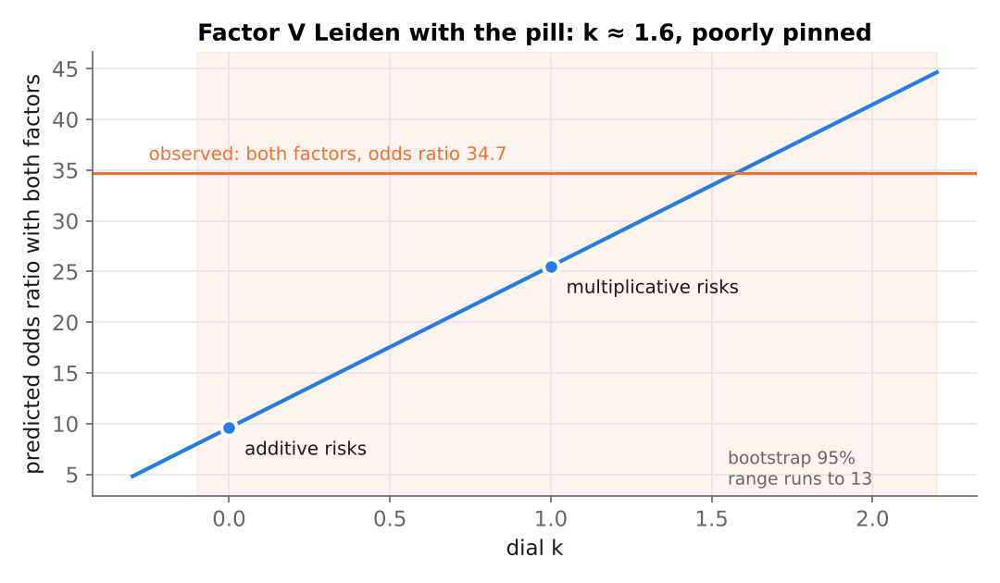

Biology series · 4 of 11
With no crossover interference, recombination fractions of neighbouring intervals combine as r₁ + r₂ − 2r₁r₂, the dial at k = −2. Its wall, −1/k = ½, is exactly a recombination fraction of one half, the value for unlinked genes, and the wall theorem says unlinked plus anything stays unlinked. Interference turns the dial, and every map-function addition rule of lens type that respects unlinkage lies on one line, 2k + d = −4, with Haldane and Kosambi on it.

Known or new. Everything here is known genetics. Haldane's map function (1919) and Kosambi's (1944) and their addition rules, the coincidence coefficient, Felsenstein's one-parameter family of map functions with a combining rule (1979), and the chi-square model of interference are standard. The gene–environment numbers are from Vandenbroucke and colleagues (1994), and the additive-versus-multiplicative interaction scales are standard epidemiology. What this page adds is the placement: Haldane is the dial at −2 with the wall at unlinkage, and the 'unlinked absorbs' condition is what pins the lens line.
Is there a lead worth following? None strong enough to follow overnight. The linkage wall is the cleanest real-world meaning a wall has had in this series: it is not a point off the edge of the data but the familiar limit r = ½. That makes it good teaching material. But it predicts nothing new, real interference (the chi-square model) is not exactly on the lens line, and the gene–environment dial for factor V Leiden is too poorly measured to say more than 'somewhere from additive to well past multiplicative'.
The recombination fraction r between two genes is the chance a gamete carries a crossover between them, an odd number of crossovers. With crossovers falling independently along the chromosome (no interference), two neighbouring intervals combine as
I checked it by simulating 200,000 meioses with Poisson crossovers: 0.2749 simulated against 0.2753 from the dial. The lift of dial −2 is 1 − 2r, so 1 − 2r multiplies along the chromosome; that is Haldane's map function r = (1 − e−2x)/2. In the coordinate u = −2r it is plain ∘₁.
The wall of dial −2 is −1/k = ½. A recombination fraction of one half is what genes on different chromosomes, or far apart on one, show: they are unlinked. The library's wall theorem, circK(k, a, −1/k) = −1/k, reads here as "an unlinked interval makes the whole stretch unlinked, whatever the rest is". Lean proves it. This is the clearest physical meaning a wall has had in the series so far: not a point off the edge of the data, but a value every geneticist knows.
Crossovers repel each other along a chromosome. Write c for the coefficient of coincidence (observed double crossovers over the number expected if independent). Then r₁₂ = r₁ ∘k r₂ with k = −2c, as bookkeeping. No interference is c = 1 (Haldane), complete interference is c = 0 (map lengths simply add). In a simulated chi-square interference model (every fifth point of a Poisson process is a crossover, m = 4), c is 0.09 for two 10 cM intervals, 0.63 for 25 cM and 0.97 for 50 cM, so no single dial setting describes real interference.
Map functions with interference use a second weight. A lens law (a + b + k·ab)/(1 − d·ab) keeps r = ½ absorbing, unlinked plus anything is unlinked, exactly when
Haldane is the point (−2, 0) and Kosambi's rule (r₁ + r₂)/(1 + 4r₁r₂) is (0, −4). Every lens law on the line is associative, so each defines a map function, and the coincidence of two tiny intervals on it is K = −k/2. This looks like Felsenstein's 1979 family, whose parameter is the small-interval coincidence; I read only its abstract, so I have not checked the match term by term. Kosambi is also plain ∘₁ after the change of variable w = 2R/(1 − R), R = 2r, because (1 + R)/(1 − R) multiplies.
Real interference is not exactly on the line. Against the chi-square model with m = 4, Kosambi (its small-interval match) misses by 0.017 in r and the best lens law still by 0.005, about five times the simulation noise.
When a gene variant and an exposure both raise risk, write each excess risk as e = (relative risk) − 1. The joint excess is e₁ ∘k e₂: k = 0 is additive risks, k = 1 multiplicative risks, and epidemiology's interaction contrast RERI is exactly k·e₁e₂.
A real case: in Vandenbroucke and colleagues' 1994 study of venous thrombosis, the odds ratios against women with neither factor were 3.7 for the pill alone, 6.9 for factor V Leiden alone and 34.7 for both. That puts the dial at k = 1.56, beyond multiplicative. But the joint cell has only two controls, and a bootstrap puts the 95% range from about −0.1 to 13: anywhere from additive to far past multiplicative. A later population study reported a smaller combined risk (about 10), which would sit near additive.

Inheritance itself is a small "or" law too: the chance that at least one of n children of two carriers is affected is 1 − (¾)ⁿ, the dial −1 power of ¼.
| Place | What the circle operation does there | Known since | Verdict |
|---|---|---|---|
| Linkage, no interference | r₁ ∘−2 r₂; 1 − 2r multiplies | Haldane 1919 | Exact, known |
| Unlinked genes | The wall r = ½ absorbs | Standard | Exact; the clearest wall so far |
| Interference | Dial k = −2c, varies with interval length | Coincidence coefficient, standard | Bookkeeping |
| Map-function lens laws | On the line 2k + d = −4; Haldane (−2, 0), Kosambi (0, −4) | Felsenstein 1979 family, by its abstract | Exact; real interference slightly off |
| Gene × environment | Joint excess risk e₁ ∘k e₂; RERI = k·e₁e₂ | Standard epidemiology | FVL k ≈ 1.6, very uncertain |
File biology/04-genetics/lean/Genetics.lean, core Lean 4.37 with no mathlib, built on the shared library's base and using ∘₁ for the circle operation. Every theorem uses only Lean's standard axioms. It goes into the shared proof library as FusedAlgebra/Topics/Biology/Genetics.lean.
affected_children, complete_interference, haldane, haldane_lift, haldane_star, haldane_three, haldane_unlinked, interference, kosambi_lift, lens_haldane, lens_kosambi, lens_unlinked, reri, risk_additive, risk_multiplicative, star_def
Numeric checks: 18 of 18 pass, from checks.py beside this page.
The factor V Leiden counts (25/2, 10/4, 84/63, 36/100 cases/controls) are from the CDC teaching page, whose two copies of the confidence intervals disagree; the point estimates match the counts. The later population study's figure of about 10 is as summarised in a search result, not opened.